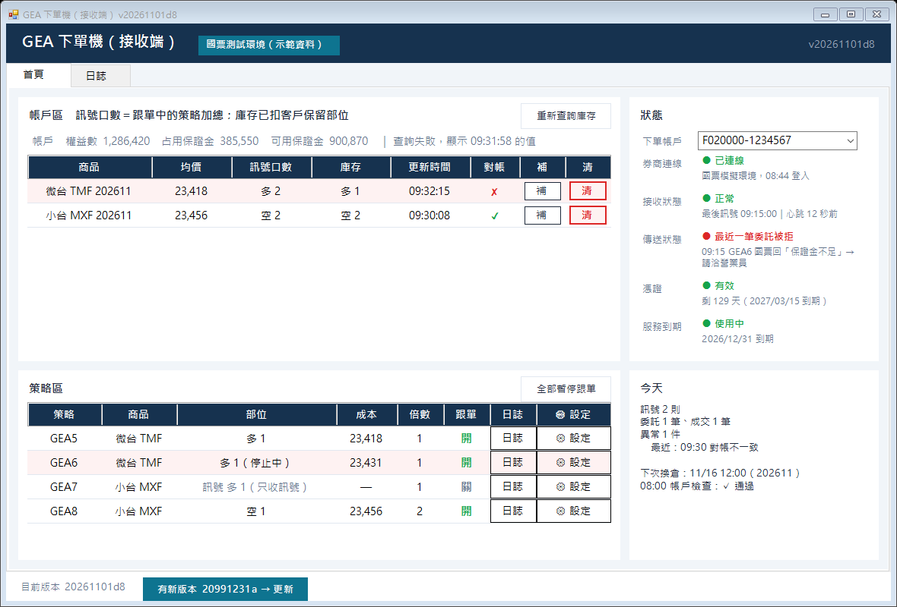
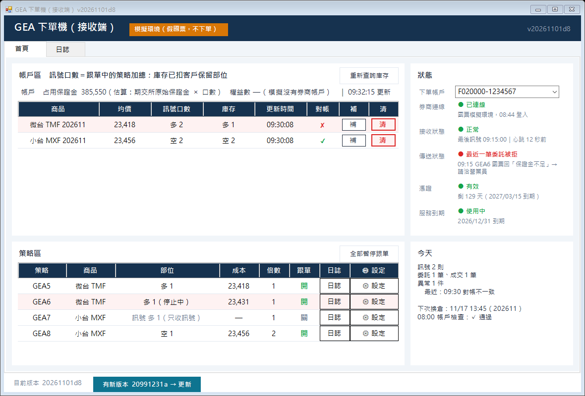

GEA 下單機：主畫面加「帳戶」列＋策略「成本」欄（預覽）
GeaOrder.exe --panel-demo --shot 直接截的正式畫面（同一套程式、同一套樣式），資料是假的。版本號還是 d8；Evans 點頭才出 d9。
要看的地方：① 帳戶區表格上方多一列「帳戶」；② 策略區「部位」右邊多一欄「成本」；③ 三種情況的樣子。
資料來源（國票 API 操作手冊 V1.18）：權益數＝FuturesRealtimeRightsAndMargin 的 equity；占用保證金＝iamt（原始保證金）；可用保證金＝ordexcess（下單可用保證金）；帳戶區「均價」＝FuturesRealtimeOpenPositionSummary 的 avg_matprice。策略「成本」＝下單機自己用每筆成交價算（加碼依口數加權、減碼不變、翻向用新成交價）。
更新：開機一次＋每次成交後（10 秒內）＋每 60 秒。
資料來源（國票 API 操作手冊 V1.18）：權益數＝FuturesRealtimeRightsAndMargin 的 equity；占用保證金＝iamt（原始保證金）；可用保證金＝ordexcess（下單可用保證金）；帳戶區「均價」＝FuturesRealtimeOpenPositionSummary 的 avg_matprice。策略「成本」＝下單機自己用每筆成交價算（加碼依口數加權、減碼不變、翻向用新成交價）。
更新：開機一次＋每次成交後（10 秒內）＋每 60 秒。
① 真單／測試環境：國票回傳
② 查詢失敗：保留上一次的值，整列變灰、標時間（原因寫日誌）

③ 模擬模式：沒有券商帳戶 → 保證金＝期交所原始保證金 × 口數，標「估算」

估算用的原始保證金（期交所 2026/08/12 公告）：大台 TXF 701,000、小台 MXF 175,250、微台 TMF 35,050（每口）。策略「成本」：沒部位＝「—」；升級前就有的部位沒有成交紀錄＝灰色「不明」，下一筆成交後開始算。